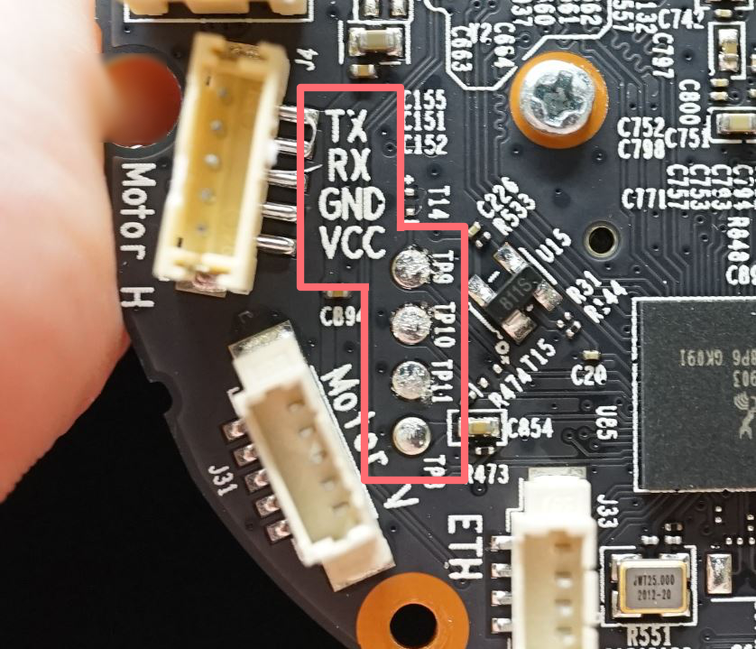

Getting Console Access
Tl;dr : Baudrate is 57600 bps, login is password protected.There are some good news and bad news when it comes to getting console access.
Good news is that the C200 has its UART pinout marked on the PCB board with correct order, so finding them is not bothering. Bad news is they are
actually UART pads that require some soldering to work in a more stable way, unlike pins or through holes that you might find in other devices.

{kind=link}
{kind=link}
You will need a USB to TTL dongle or anything with the capability of communicating over RS232 protocol (such as an arduino or raspberry pi) to access the console. Normally these things will need
to be connected with dupont wires, so we just simply cut one head of a dupont wire and solder it onto the UART pads.
Be extra vigilant when soldering to pads on PCB boards! These pads are extremely
fragile and can be ripped right off from the board [*]. Make sure not to apply too much pulling / pushing force to the wires once they're soldered in place. We used some tape to secure the wires in
place.
{kind=link}
{kind=link}
{kind=link}
TX stands for Transmit, RX stands for Receive, GND stands for ground. Other pins are usually not needed in the context of accessing console of a consumer device.
When connecting USB to TTL dongle
to the PCB board, remember that TX of one end needs to be connected to RX of the other end.
{kind=link}
Connect USB to TTL dongle to any linux system, and check the output of dmesg in the terminal (In some linux distro dmesg might require sudo privilege.)
If things
are working properly, you should see some output similar to what is shown in the image below. It tells you that the dongle is attached to ttyUSB0 [*]
{kind=link}
Knowing the virtual device your dongle is connected to, you can then use screen to communicate with the console of the camera.
The full command is
sudo screen /dev/ttyUSB0 57600 , 57600 being the baudrate for UART communication. [*]
After you successfully started screen,
power on your C200 and you should see its boot log flying through your terminal!
{kind=link}
So far, so good.
But here we are confronted to our first problem: UART console requires login credentials.
However
we're not stuck yet. It's time to check if these credentials can be found in the firmware!
{kind=link}